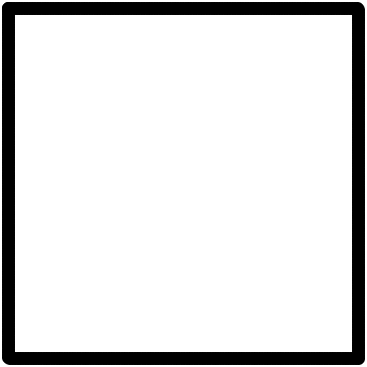
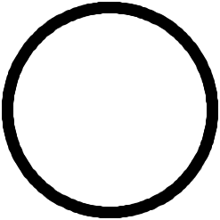

| MECHANICAL SERVICE PARTS LIST | AKD 3523 | |
These have been designed with a colour code to enable users to file or find Parts Lists readily. The system is as follows:
Coloured rectangles at top of spineThis indicates what the List deals with, as under:

| Red ... | ... Mechanical. | Tan ... | ... Power Unit (Diesel). | |
| Light Blue | ... Body. | Magenta | ... C.V. Chassis. | |
| Brown ... | ... Power Unit (Petrol). | Deep Yellow | ... C.V. Body and Cab. | |
| Pink ... | ... Engines. |
These indicate the franchises covered by the List. For any particular franchise the circle will always appear at the same height on the spine label. Additionally, it will be coloured as under:

| Blue | ... | ... Austin. | Pink | ... | ... Wolseley. | |
| White | ... | ... Morris. | Maroon | ... | ... Vanden Plas. | |
| Yellow | ... M.G. | Stone | ... | ... Austin Commercial. | ||
| Grey | ... | ... Riley. | Green | ... | ... Morris Commercial. |
For easy identification when the List is lying flat the colour of the text of the title-page repeats that on the spine label indicating whether the List is Mechanical, Body, etc.
| Issue 3 | ||
| 5 | ||